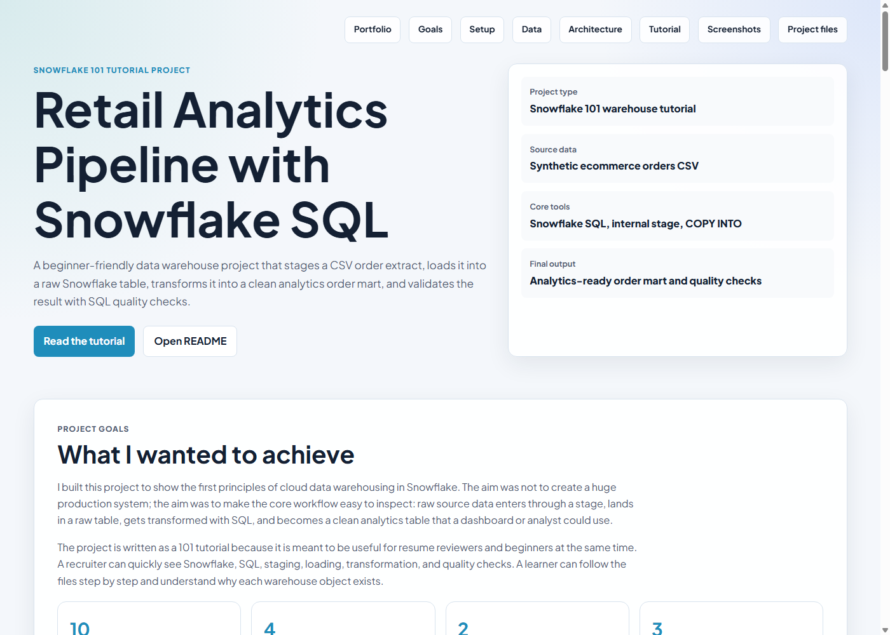
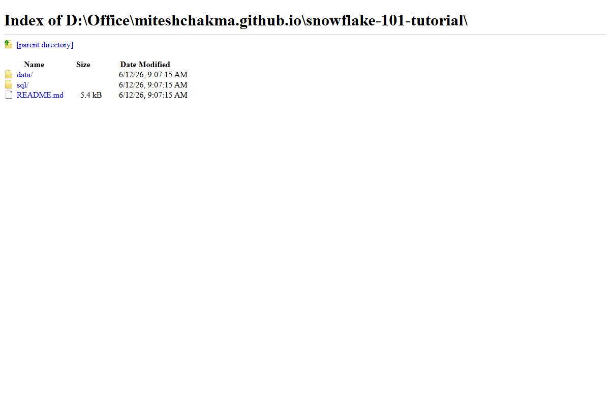
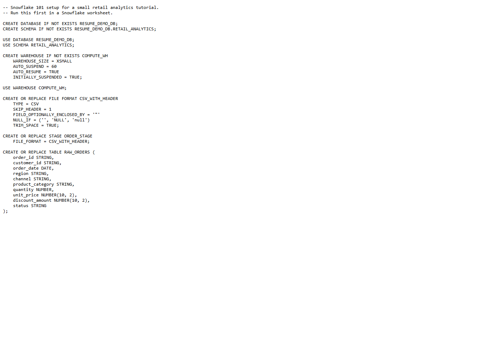
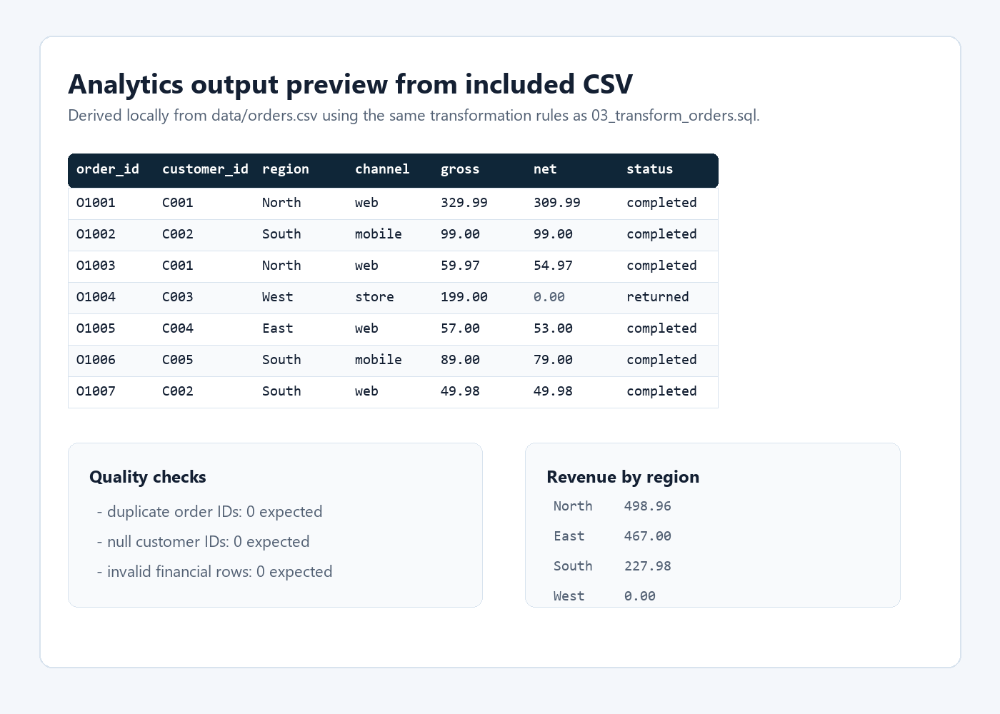

Required
- A Snowflake account or trial account.
- Snowsight access in the browser.
- Permission to create a database, schema, warehouse, stage, and tables.
- The included
data/orders.csvfile. - The SQL files in
snowflake-101-tutorial/sql/.
Snowflake 101 tutorial project
A beginner-friendly data warehouse project that stages a CSV order extract, loads it into a raw Snowflake table, transforms it into a clean analytics order mart, and validates the result with SQL quality checks.
Project goals
I built this project to show the first principles of cloud data warehousing in Snowflake. The aim was not to create a huge production system; the aim was to make the core workflow easy to inspect: raw source data enters through a stage, lands in a raw table, gets transformed with SQL, and becomes a clean analytics table that a dashboard or analyst could use.
The project is written as a 101 tutorial because it is meant to be useful for resume reviewers and beginners at the same time. A recruiter can quickly see Snowflake, SQL, staging, loading, transformation, and quality checks. A learner can follow the files step by step and understand why each warehouse object exists.
Before starting
This project can be followed in two ways. The easiest path is using Snowflake's browser UI, Snowsight, where no local installation is needed. The more developer-style path uses SnowSQL to upload the CSV from your machine with a command.
For this portfolio tutorial, the required technology is deliberately small: Snowflake for the warehouse, SQL for transformations and checks, and one CSV file as the source data. I avoided Python, dbt, Airflow, Docker, and external cloud storage here because the goal is to teach Snowflake loading and transformation basics without adding extra infrastructure.
data/orders.csv file.snowflake-101-tutorial/sql/.PUT.orders.csv manually.01_setup.sql.Business scenario
Imagine a small ecommerce business that exports orders from an operational system. The business wants to understand completed revenue, returned orders, cancelled orders, customer behavior, regional performance, and channel performance. The raw CSV is useful, but it is not yet analytics-ready.
The Snowflake tutorial simulates that common handoff between operational data and analytics data. The raw order extract is loaded exactly as source data, then a separate analytics table applies business rules: completed orders count toward revenue, returned and cancelled orders remain visible but contribute zero net revenue, and useful flags are created for reporting.
Keep the source table close to the original file so loading problems are easy to debug.
Create a clean table with normalized values, revenue rules, status flags, and a timestamp.
Check duplicates, missing required IDs, and invalid financial values before trusting reports.
Data source
The dataset is synthetic sample ecommerce data created specifically for this tutorial. It is not copied from a real company, customer system, Kaggle dataset, or private source. I used synthetic data because the project is public on my portfolio and should not expose personal, commercial, or confidential information.
The rows were designed to mimic a realistic order export: each order has a customer, date, region, sales channel, product category, quantity, unit price, discount amount, and status. The file includes completed, returned, and cancelled orders so the SQL transformation has to apply a real business rule instead of simply summing every row.
| Design choice | Reason | What it allows the project to show |
|---|---|---|
| Small synthetic CSV | Safe to publish and easy to inspect. | Beginner-friendly loading without privacy risk. |
| Multiple order statuses | Completed, returned, and cancelled orders behave differently. | Business rules for revenue calculation. |
| Multiple regions and channels | Analytics tables usually support grouped reporting. | Revenue by region and channel performance queries. |
| Discount field | Real revenue often differs from gross order value. | Gross revenue, net revenue, and discount-rate calculations. |
| Repeat customers | Customers can place more than one order. | Top-customer summaries and future customer-level features. |
Architecture
The project uses a simple two-layer warehouse pattern. `RAW_ORDERS` receives data loaded from the staged CSV file. `ANALYTICS_ORDERS` is rebuilt from the raw table and contains the cleaned fields used for analysis.
Why this flow
I chose this flow because it mirrors a common warehouse pattern while staying simple enough for a 101 tutorial. Each layer has a different responsibility, so the project is easier to debug, explain, and extend.
| Step | Why it exists | Problem it solves |
|---|---|---|
| CSV source file | Represents an operational extract from an ecommerce system. | Gives the project a realistic starting point. |
| Internal stage | Snowflake loads files from stages, not directly from a local folder in a worksheet. | Separates file storage from table loading. |
| File format | Tells Snowflake how to read headers, quotes, blanks, and CSV structure. | Prevents parsing mistakes during load. |
| Raw table | Keeps a landing copy close to the source file. | Makes load issues easier to inspect before applying business logic. |
| Analytics table | Applies cleaning, normalization, revenue rules, and flags. | Creates a clean table suitable for dashboards or analysis. |
| Quality checks | Tests whether the final table is reasonable before trusting the numbers. | Catches duplicates, missing IDs, and invalid financial values. |
Data model
The dataset is synthetic and safe to publish. It contains enough variation to show meaningful transformation logic: multiple channels, several regions, completed orders, returned orders, cancelled orders, discounts, and repeat customers.
| Column | Purpose | How it is used |
|---|---|---|
order_id | Unique order identifier | Checked for duplicates. |
customer_id | Customer identifier | Required for customer-level summaries. |
order_date | Order date | Used for ordering and future time-based reporting. |
region | Sales region | Normalized and grouped for revenue reporting. |
channel | Web, mobile, or store | Normalized and used for channel performance. |
quantity, unit_price | Order value inputs | Used to calculate gross revenue. |
discount_amount | Discount applied | Used to calculate net revenue and discount rate. |
status | Completed, returned, or cancelled | Controls revenue logic and status flags. |
Detailed tutorial
The project is split into four SQL files so each stage has one clear responsibility. This makes it easier to explain during interviews and easier for a reviewer to inspect.
Before running project SQL, open Snowsight and choose a role that can create objects. For a beginner trial account, this is often a role such as ACCOUNTADMIN or another role granted database and warehouse privileges.
Why it matters: Snowflake permissions control who can create warehouses, databases, schemas, stages, and tables. If the role is too limited, the setup script will fail before the tutorial begins.
Run sql/01_setup.sql. This creates RESUME_DEMO_DB, RETAIL_ANALYTICS, COMPUTE_WH, CSV_WITH_HEADER, ORDER_STAGE, RAW_ORDERS, and ANALYTICS_ORDERS.
Why it matters: Snowflake work starts with clear object organization. Separating database, schema, stage, and tables makes the project easier to operate and explain.
Open data/orders.csv before uploading it. Confirm that it has a header row, 10 order rows, numeric quantity and price fields, and the statuses completed, returned, and cancelled.
Why it matters: good data work starts before loading. Looking at the source file helps explain why the file format skips one header row and why the transformation needs status-based revenue logic.
Upload data/orders.csv to @ORDER_STAGE through Snowsight. If using SnowSQL, run PUT file://data/orders.csv @ORDER_STAGE AUTO_COMPRESS=TRUE; from the project folder.
Why it matters: stages are the bridge between files and warehouse tables. This project uses an internal stage so a beginner does not need AWS S3, Azure Blob Storage, or Google Cloud Storage.
Run sql/02_load_raw_orders.sql. The script truncates RAW_ORDERS, loads the staged file, aborts on load errors, and returns a row count.
Expected result: RAW_ORDERS contains 10 rows from the sample CSV.
Run sql/03_transform_orders.sql. The transformation creates ANALYTICS_ORDERS with normalized text fields, gross revenue, net revenue, completed and returned flags, discount rate, and load timestamp.
Business rule: only completed orders contribute to net_revenue. Returned and cancelled orders stay in the table for visibility but contribute zero revenue.
Run sql/04_quality_checks.sql. It checks duplicate order IDs, missing customer IDs, invalid financial values, revenue by region, channel performance, and top customers.
Why it matters: a small data pipeline is still only useful if the output can be trusted. These checks show how I think about reliability even in a beginner tutorial.
Transformation logic
The central transformation is the revenue rule. The raw file has order status, quantity, price, and discount. The analytics table converts those fields into reporting metrics.
CASE
WHEN LOWER(status) = 'completed'
THEN (quantity * unit_price) - COALESCE(discount_amount, 0)
ELSE 0
END AS net_revenueReal project screenshots
These screenshots are captured from the actual local website and project files in this repository. They show the project page, folder structure, SQL setup script, and a preview of the generated analytics logic/output.




Expected findings
Completed orders contribute to revenue. Returned and cancelled orders remain visible for reporting but do not inflate revenue.
The North region has strong completed revenue because it includes a high-value electronics order and another completed home order.
Web has multiple completed orders, making it a useful channel to inspect in a dashboard or follow-up analysis.
Resume wording
Built a Snowflake 101 retail analytics tutorial that stages synthetic ecommerce CSV data, loads it into a raw Snowflake table with COPY INTO, transforms it into an analytics-ready order mart, and validates the output with SQL data quality checks and business summary queries.
Run order
-- 1. Create Snowflake objects
sql/01_setup.sql
-- 2. Upload the source file to @ORDER_STAGE
data/orders.csv
-- 3. Load raw rows
sql/02_load_raw_orders.sql
-- 4. Build analytics table
sql/03_transform_orders.sql
-- 5. Validate and summarize
sql/04_quality_checks.sql